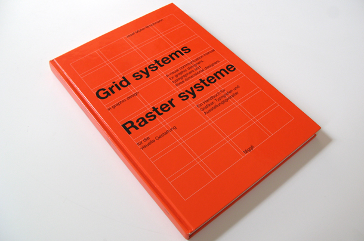

INTRODUCTIE
" Grids aren’t just useful for us as designers or developers -
they’re good for the user, too. After all, the user is there to
consume your content and you want to make it as good an
experience for them as you can. Having a solid grid system to
use in your designs will allow you to do just that, by creating
consistency and familiarity and thus building trust in your
design. “
by Rachel Shillcock, 22 Aug 2013
01
+
GESCHEIDENIS
Hieronder vindt je een grove tijdlijn van belangrijke momenten als
het gaat om grids.
Benieuwd naar de verschillende verhalen? Klik dan op het jaartal!
-
3300
332 BCEgyptenaren
Ondanks grid systemen vandaag de dag niet weg te denken zijn in het ontwerp van interactieve producten, zijn ze al eeuwen oud. Een van de eerste grids .......
-
1452
Gutenberg bijbel
Later werden grids ook gebruikt voor het vormgeven van drukwerk één van de belangrijkste ontwerpen is .......
-
1914
Josef Müller-Brockmann
Hij is één van de grote namen binnen grafisch ontwerp en staat bekend als .......
-
heden
Grids in web en
UI designIn de begindagen van het web gebruikten ontwikkelaars vaak tabellen om een lay-out te creëren. Sindsdien zijn we qua grids flink ontwikkeld en ........

by: https://medium.theuxblog.com/@Cerosdotcom
WAT?
Wat is een grid systeem?
Een grid systeem is een raster voor het ordenen van de lay-out. De
lay-outs kan worden afgedrukt (zoals een boek, tijdschrift of
poster) of voor een scherm (zoals een webpagina, app of andere
gebruikersinterface).
Een grid systeem bestaat uit de volgende elementen:
WAAROM?
Waarom zou je een grid systeem gebruiken?
Ontwerpers lossen problemen op. UI ontwerpers worden geconfronteerd met het vinden van oplossingen voor visuele problemen en het organiseren van deze oplossingen. En één manier om deze problemen op te lossen is door het gebruik van een Grid System. Het is één oplossing die meerdere voordelen met zich mee brengt zoals:
01
Grids voegen orde, continuiteit en harmonie toe02
Grids helpen gebruikers voorspellen waar ze informatie kunnen vinden03
Grids helpen gebruiker voorspellen hoe ze moeten navigeren04
Grids maken het makkelijker om bepaalde inhoud aan website toe te voegen05
Grids helpen webgebruikers elementen te vinden en helpen webontwerperselementen te plaatsen waar ze kunnen worden gevonden.
Het gebruik van een grid systeem lost zeker niet alle problemen op voor een ontwerper,
maar door het toepassen van deze oplossing los je tegelijker tijd meerdere problemen op.
De belangrijkste reden waarom het zo vaak word gebruikt is dat het voor de gebruiker en de ontwerper consistentie,
orde en duidelijkheid biedt.
Het gebruik van een Grid systeem word altijd al vanaf het begin van de ontwerpfase gebruikt,
omdat je hiermee het skelet van je ontwerp opzet. Wanneer de ontwerper het grid heeft bepaald,
word vervolgens het gehele ontwerp hierop gebaseerd. Hierna word het ontwerp doorgespeeld naar de developer,
die het grid in html/css nabouwt in code.
HOE?
Hoe ga je aan het werk als je een grid ontwerp.
Hieronder vertellen we er meer over.
Schetsen
Beperkingen
Margins
Bron: https://read.compassofdesign.com/guides-gutters-and-grids-2ce6092fc3de
Baseline grid
Bron: https://read.compassofdesign.com/guides-gutters-and-grids-2ce6092fc3de
Kolommen en gutters
De gutter kan je op 2% van de resolutie grote zetten, zodat de units niet te dicht op elkaar staan en ruimte hebben om te kunnen ademen.
WIE?
Hieronder beschrijven wij 2 auteurs die schrijven over het grid system.
Wij hebben deze 2 literatuurs gebruikt bij ons onderzoek.
Hieronder vertellen we er meer over.
Grid system legend in graphic design
Een van de bekendste designer die bekend staat om grid systems voor grafisch vormgeven is Josef Müller-Brockmann. Zijn boek: Grid systems in graphic design is zeker een aanrader te lezen. Hierin krijg je een gedetailleerd uitleg over hoe je grids kan maken en toepassen in grafisch ontwerp.
by: http://thinkingform.nyc/2011/03/18/grid-systems-in-graphic-design/
Grid system legend in UI design
Het boek: Ordering Disorder: Grid Principles for Web Design van ontwerper Khoi Vinh is een aanrader als je je wilt verdiepen in het gebruik van grid systems in User Interface Design. Het geeft je niet alleen een uitleg over het toepassen en maken van grids in ui, maar ook veel informatie over het ontstaan ervan.
by: https://www.subtraction.com/2010/11/05/i-wrote-a-book/